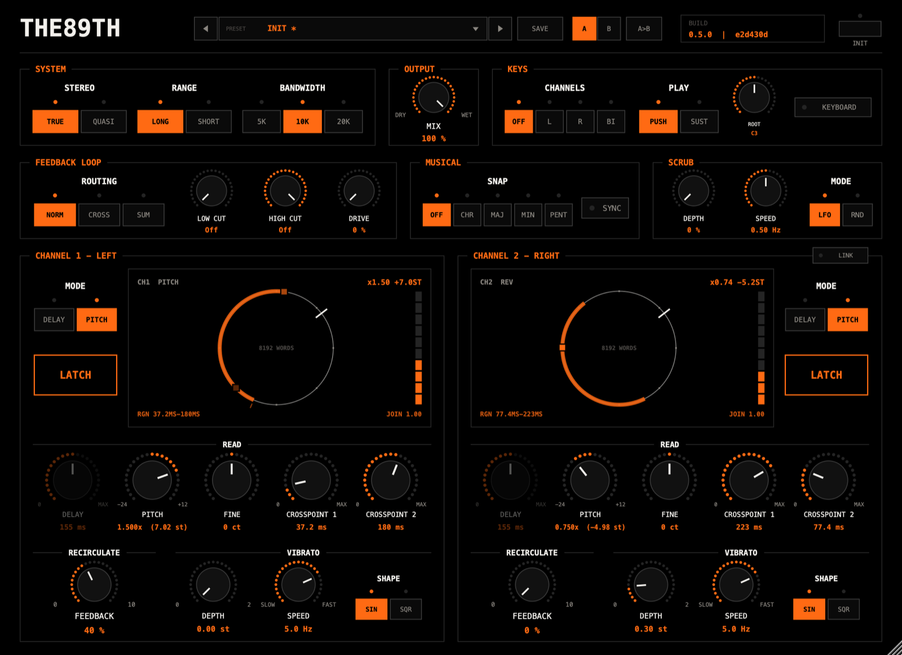
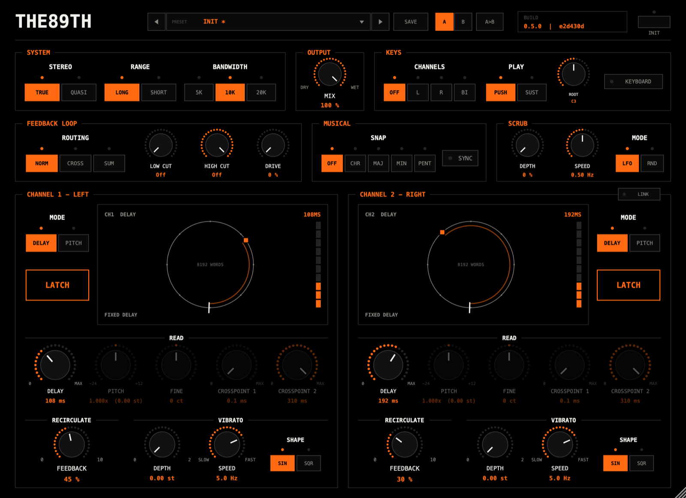
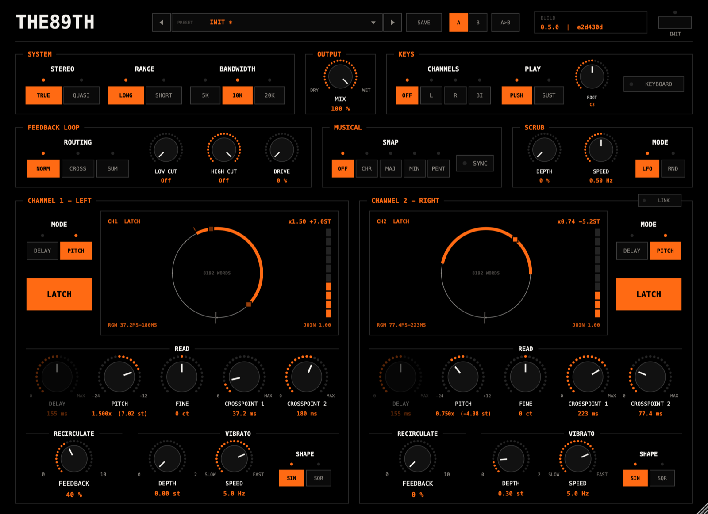
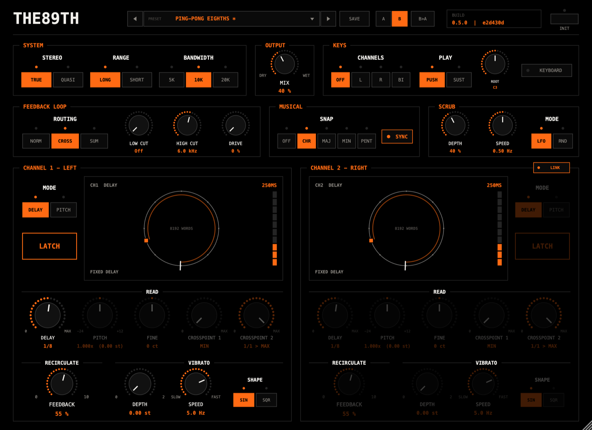
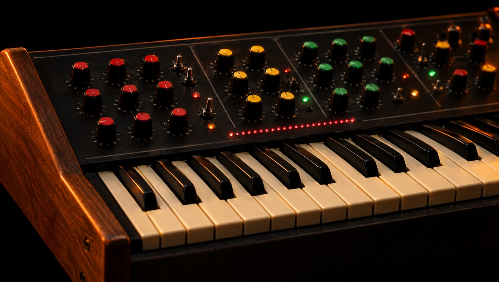
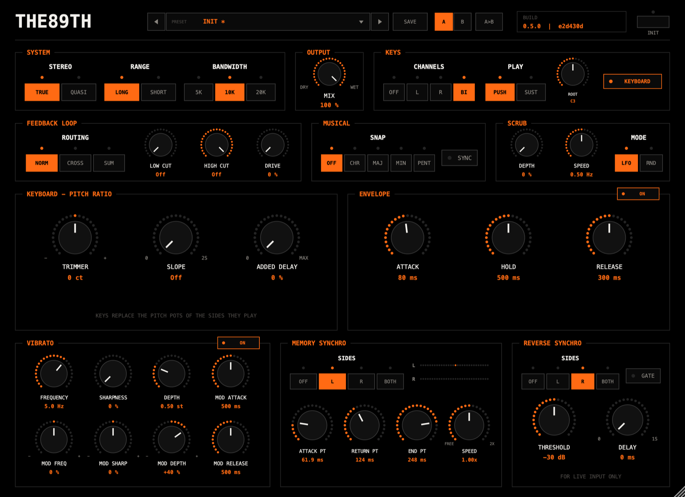

THE89TH copies a machine from 1978: two channels of digital delay that can also shift pitch, reverse, and hold a sound in memory to play back like a tape loop. Everything the original does is here, and it sounds grainy and alive in the same ways. A row of modern extras sits on top. Each one does nothing until you turn it up, so a fresh instance is the original and nothing else.
Install
The plugin installs to ~/Library/Audio/Plug-Ins/VST3/THE89TH.vst3. It runs on Apple Silicon Macs as a VST3 effect or as a standalone app.
In FL Studio, open Options › Manage plugins and rescan. THE89TH appears under effects, in the Delay category.
Put it on a mixer insert like any delay. It works in stereo or mono.
After an update
A running FL keeps the copy of the plugin it loaded first, even after a rescan. Quit FL and open it again to load a new version. The Build plate at the top right of the panel shows the version and build you are running, so you can always check.
First sound in thirty seconds
Play something through it. At the defaults each channel is a pitch shifter set to no shift, so you hear your sound slightly delayed.
Turn a channel's Pitch knob. The sound shifts up or down, up to an octave up and two octaves down.
Turn Crosspoint 2 down to about a third. The shift gets tighter and more rhythmic.
Press Latch. The input is cut off and whatever was in memory loops. Keep turning Pitch: you are now playing a sample.
How it works
Picture a tape loop with one recording head and two playback heads.
The recording head writes your sound into memory at a fixed speed. The playback heads read it back at whatever speed the Pitch control sets. Reading faster than you record raises the pitch, and reading slower lowers it. A head can't read faster than the recording for ever without overtaking it, so two crosspoints fence off a stretch of memory. When a head reaches the far crosspoint it jumps back to the near one. The second head takes over at that moment and the two crossfade, so you don't hear the join.
Pitch is how fast the heads move through the region. The region's size sets how often they jump.
That one mechanism gives you everything else:
Reverse is not a separate mode. Set Crosspoint 1 deeper than Crosspoint 2 and the heads read the region backwards.
Latch stops the recording head. The playback heads keep moving, so the region loops, and pitch and reverse still work on it.
Feedback sends the output back into memory, through the pitch shifter, so each repeat climbs or falls further.
Bandwidth changes the machine's clock. What is already in memory then plays back at the new speed and jumps by an octave, exactly as on the original.
Dashed stages run in Delay mode only. Feedback leaves after the heads and goes back in before memory. The converter stores each sample as a 13-bit floating-point word, which is where much of the original's grain comes from, and it clips hard at full scale.
The panel
The panel opens at 1100 × 800 and resizes from 880 to 1760 wide. Orange means live: values, lit rings and active switches. Controls the current mode ignores fade back instead of disappearing, so nothing moves under your hand. Double-click any knob to reset it.

1234567891011121314
Presets, Save and A/B
Build: version and build loaded
Init: everything back to default
System: Stereo, Range, Bandwidth
Output: Mix
Keys: the keyboard
Feedback loop (modern)
Musical: Snap, Sync (modern)
Scrub (modern)
Mode and Latch, per channel
The channel's display
Read: Delay, Pitch, Fine, Crosspoints
Recirculate and Vibrato
Link: channel 2 follows channel 1
Presets and A/B
◀ ▶ and the name
Step through presets, or click the name for the full list. An asterisk means you've changed something since loading.
Save
Stores the panel as one of your presets, one file each, in ~/Library/Application Support/THE89TH/Presets. The list also offers Delete and Show preset folder. Factory presets can't be overwritten.
A / B
Two complete settings to flip between while you tweak. The first switch copies the current setting across. A>B copies the side you're on to the other. Both slots are saved with the project.
Init
Returns every control to its default and clears the memory. Hosts can't automate it, so a stray automation lane can't wipe a song.
System & output
These switches are shared by both channels, as on the original, because they set the one converter and the one memory the channels share.
StereoTrue · Quasi
True gives two independent channels, each with half the memory. Quasi mixes both inputs into one recording that fills the whole memory. Both channels then play that one recording with their own pitch and crosspoints, their repeats merge, and 20 kHz becomes available. Original
RangeLong · Short
Short divides the Delay knob's range by ten, for doubling and flanging. Original
Bandwidth5K · 10K · 20K
Sets the machine's clock. Lower is longer and grainier. Switching while sound is in memory drops or raises it by octaves on the spot, which is one of the original's signature tricks. 20K needs Quasi; in True stereo it stays at 10K. Original
Mix
Dry to wet. At 100 % you hear only the machine.
Bandwidth
Machine clock
Longest delay, True
Longest delay, Quasi
5 kHz
13,228 Hz
619 ms
1,239 ms
10 kHz
26,455 Hz
310 ms
619 ms
20 kHz
52,910 Hz
not available
310 ms
The original's brochure quotes 1,200, 600 and 300 ms, the Quasi column rounded.
Channels
Each channel has the same set of controls, laid out in three groups. Mode and Latch sit at the channel's outer edge, where the original has them.
ModeDelay · Pitch
Delay makes the channel a plain delay set by its Delay knob, with a treble lift before memory and a matching cut after, which pushes storage noise down. Pitch sends the heads through the crosspoint region at the Pitch ratio. Each channel picks its own. Original
Latch
The memory latch. Stops recording and loops the region, with pitch and reverse still active. Lights solid orange while latched. In Quasi there is one recording, so either channel's Latch holds both. Original
Delay
The delay time in Delay mode, read in milliseconds. Changes crossfade to the new time, so there's no pitch bend and no click. Fades in Pitch mode. Original
Pitch0.25× to 2×
Two octaves down to one up. The ring lights from the centre, where nothing is shifted. Original
Fine±100 cents
A fine trim on top of Pitch. The original has coarse and fine pitch pots. Original
Crosspoint 1 / 2
The two edges of the region the heads play, in milliseconds behind the write head. Their distance sets the grain: short regions track rhythm tightly and colour sustained notes, long ones make rhythmic cut-ups. Put Crosspoint 1 deeper than Crosspoint 2 and the region plays in reverse. The original's manual advises keeping them at least 10 ms apart. Original
Feedback
Repeats go back through the pitch shifter, so they arpeggiate: a fifth up keeps climbing in fifths. Original
VibratoDepth · Speed · Shape
Depth up to 2 semitones, speed 0.1 to 10 Hz. SIN is the original's. SQR is a modern trill: in Pitch mode it jumps up by the depth and back; in Delay mode it alternates up and down. OriginalSQR modern
Link
On channel 2's title line. Channel 2 follows every channel 1 control, and its own knobs fade. Modern
Moves never clickPitch, Feedback, Vibrato depth, Mix and the loop's cuts and drive glide over 30 ms. Delay crossfades to its new time. A crosspoint pulled past a read head crossfades the head back into the region.

Both channels in Delay mode: Pitch and the crosspoints fade, Delay is live.
The display
Each channel's display draws its memory as a circle, turning as the addresses do.
The white tick sweeping round is the write head.
The orange arc is the crosspoint region. It turns solid when latched.
The orange squares are the read heads, each as bright as it is loud, so you can watch a join crossfade.
The top line shows the mode and the pitch or delay, or the key being played.
The bottom line shows the control under your hand, and otherwise the region and how well the last join matched. JOIN 1.00 is a perfect match.
A level meter runs down the right side.

Both channels latched: the regions turn solid and the displays read LATCH.
Modern row
Additions that the original didn't have. Each does nothing at its default.
RoutingNorm · Cross · Sum
True stereo only. Norm: each side feeds itself, as on the original. Cross: each side's repeats come back on the other, ping-pong. Sum: both feed both.
Low cut / High cut / Drive
Inside the feedback loop, so they build up with every repeat. A high cut darkens each pass a little more; drive thickens repeats and rounds off loud ones.
Snap
Pulls the Pitch knobs onto a scale counted from the unshifted note: chromatic, major, minor or pentatonic.
Sync
Delay and both crosspoints step through note values, 1/64 to a whole note with triplets and dotted, at the host tempo. A value longer than the memory holds reads > MAX and plays at the longest that fits.
ScrubDepth · Speed · LFO / RND
Slides the region back and forth by up to its own length each way. LFO sways; RND wanders to a new spot each cycle. It needs a region smaller than the whole memory.

The Ping-Pong Eighths preset: Sync, Cross routing and a high cut in the loop.
Keyboard

The original was sold with a three-octave keyboard controller that played its pitch clock. It turned the machine into one of the first samplers. THE89TH plays the same controller from MIDI.
Its layout and behaviour come from photos of a working unit and the original brochure. They say what every section does but give no times or ranges, so those are our choices.
Getting MIDI in, in FL Studio
Add a MIDI Out channel to the Channel Rack and give it a port number.
Open THE89TH's wrapper settings (the gear icon) and set its MIDI input port to the same number.
Notes on the MIDI Out channel, or your keyboard with it selected, now play the plugin.
The Keys box
ChannelsOff · L · R · BI
Which channels the keyboard plays. BI is the original's biphonic mode: two voices, the lower key on the left and the higher on the right. One key plays on both. Original
PlayPush · Sust
Push sounds only while a key is down, like an organ. Sust starts the note on the key and lets the envelope decide how long it lasts. Original
Root
The key that plays at the original pitch, C3 by default. Each key is a semitone, within −24 to +12. Pitch bend adds ±2 semitones.
Keyboard
Opens the keyboard's own panel in place of the channels. Click again to go back.
A key replaces the Pitch and Fine knobs of the channels it plays; they fade on the panel. The newest key sounds; lift it and the one held before comes back. Notes land on the exact sample they're played.
Silence latchesWhen a keyboard channel falls silent it latches and mutes, as the original did at note-off. Whatever was playing stays in memory, so the next key replays it at a new pitch. Latch the channel yourself and the keyboard plays a frozen loop like a sampler.

The keyboard page, biphonic, with the envelope, vibrato and Memory Synchro on.
Pitch ratio
Trimmer±100 cents
Tunes the whole keyboard. Original
SlopeOff to 2 s
Glissando: how long a channel takes to slide from one note to the next. Original
Added delay
Pushes the region deeper, a delay in series with the shift. The brochure's three-voice chorus is your dry sound plus the two keyed channels with some added delay. Original
Envelope
On
Two envelopes, one per channel, on the output. Off, notes just fade in and out over 5 ms. Original
Attack1 ms to 2 s
Fade-in at each new note.
Hold0 to 5 s
In Sust mode, how long the note stays up before it releases.
Release5 ms to 5 s
Fade-out after the key lifts, or after the hold in Sust.
Vibrato
On
A vibrato on the keyed channels that evolves through each note. Original
Frequency · Sharpness · Depth
The starting point: speed (0.1 to 12 Hz), shape from sine towards square, and depth up to 2 semitones.
Mod freq · sharp · depth
How far a modulator pulls each of those, up or down, as the note goes on. Mod depth at +50 % with no base depth gives the classic delayed vibrato.
Mod attack · release
How fast the modulator rises after each note starts, and falls after it ends.
Memory Synchro
For latched memory: the original's "biphonic memory synthesizer". Record something, latch it, then play it from the keys.
SidesOff · L · R · Both
Which channels it acts on. Original
Attack pt
Where in memory each note starts, counted from the oldest sound.
End pt · Return pt
While the note lasts, reading runs to the end point, then loops from the return point.
SpeedFree · up to 2×
1× reads as recorded. Slower or faster stretches time without changing pitch. Free reads at the pitch, like tape.
The row of lights beside the switch shows where each channel is reading, like the thirty-light bar on the original.
Reverse Synchro
For live input only. On its own, reverse chops the sound on its own schedule, so the result drifts against the tempo. Reverse Synchro restarts the reverse on each attack in the input, so reversed drums stay in time.
SidesOff · L · R · Both
Which channels it acts on: any channel in Pitch mode, played from the keys or not. It pauses while a channel is latched. Original
Threshold−60 to 0 dB
How loud a sound must get to count as an attack.
Delay0 to 1 s
Waits this long after each attack before restarting.
Gate
Mutes the channel while its input stays below the threshold.
Recipes
Starting points. Settings not listed stay at their defaults.
Octave doubler
A clean voice an octave up, tucked under the dry signal.
Pitch 2.0×Crosspoint 2 30 %Mix 35 %
Wide detune
A chorus with no modulation: each side slightly off in the opposite direction.
Fine L +8 ctFine R −8 ctCrosspoint 2 12 %Mix 50 %
Reverse tail
Every phrase comes back backwards. Add Feedback for a wash.
Crosspoint 1 50 %Crosspoint 2 0Mix 60 %
Rising arpeggio
Repeats climb in fifths through the pitch shifter.
Snap CHRPitch +7 stCrosspoint 2 35 %Feedback 70 %
Digital glitch campfire
The trick from the original's demos: hold a loop and flip the clock while it plays.
Feedback highLatch onBandwidth flip 5K ↔ 10K
Keyed sampler
Record a bar, latch it, then play it from the keys with a slow attack.
Keys BILatch bothEnvelope onAttack 200 ms
Stretched loop
A latched phrase played at half speed without dropping in pitch.
Keys LLatch LMemory Synchro LSpeed 0.5×
Reversed drums in time
Backwards hits that still land on the beat.
Crosspoint 1 30 %Crosspoint 2 0Reverse Synchro BothThreshold −24 dB
Tips & limits
Run at 48 kHz
At a 44.1 kHz project rate the host itself stops at 22.05 kHz, so the filters cap slightly below 20 kHz. 48 kHz or higher gets the full band.
Latency
The plugin reports a fixed 3.3 ms and holds the dry signal back by the same amount, so the host keeps everything in time. The delay you set is on top of that, as it should be.
Peaks above 0 dBFS
Mid-crossfade the two heads can add up, and heavy feedback clips the converter, whose steep filter then overshoots. Expect up to about +5 dB at extreme feedback. Nothing clips inside the plugin; watch the channel meter.
Short regions
Very short crosspoint regions splice many times a second. That buzz is part of the sound; for smooth shifts keep the region at 10 ms or more.
Updates in FL
Quit and reopen FL after installing a new build. The Build plate shows which one is loaded.
Next to the original
THE89TH is modelled on the original's design: the same memory, 16,384 thirteen-bit words, the same clock, the same converter format, the same two-head mechanism, word-for-word reading and the same switches. Its figures match the original's published ones. The layout of both front panels and the keyboard's behaviour come from photos of working units and the original brochure.
Where nothing is published we chose, and wrote the choice down: the filter shape, the treble-lift curve, how the join search picks its points, and the keyboard's times and ranges. The original's rear-panel control sockets, the keyboard's microphone input and the slow drift of its analog pitch oscillator are left out.
The full list, with every behaviour marked as matching, derived, assumed or not modelled, is docs/clone-status.md in the project.